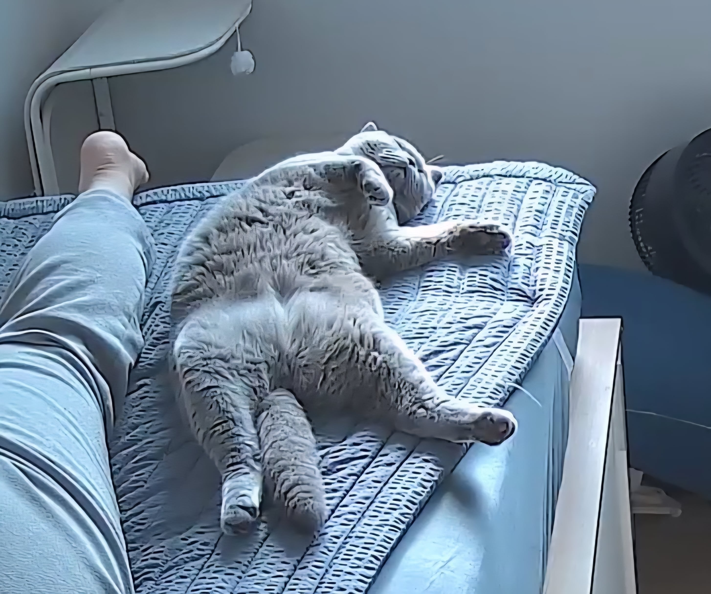
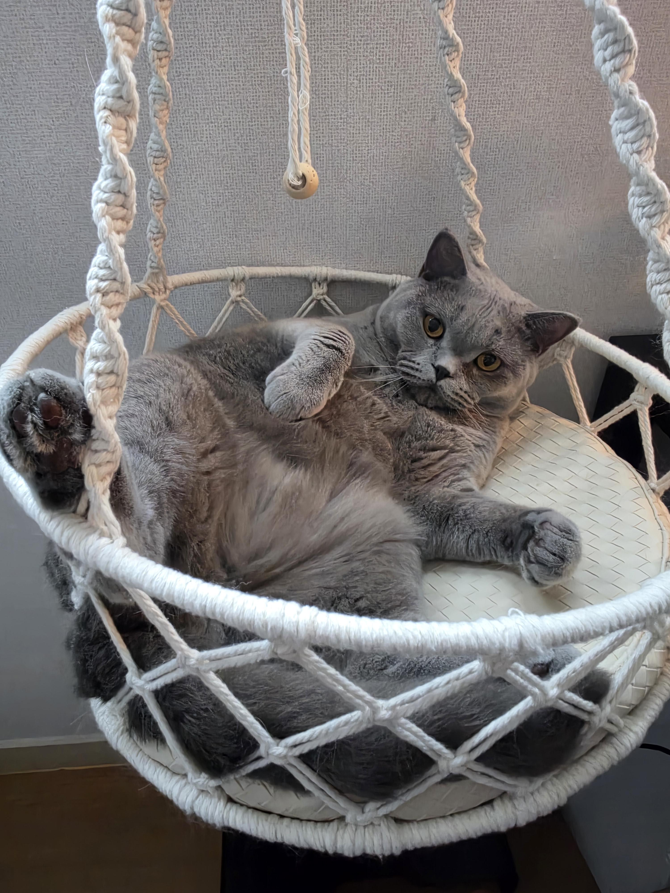
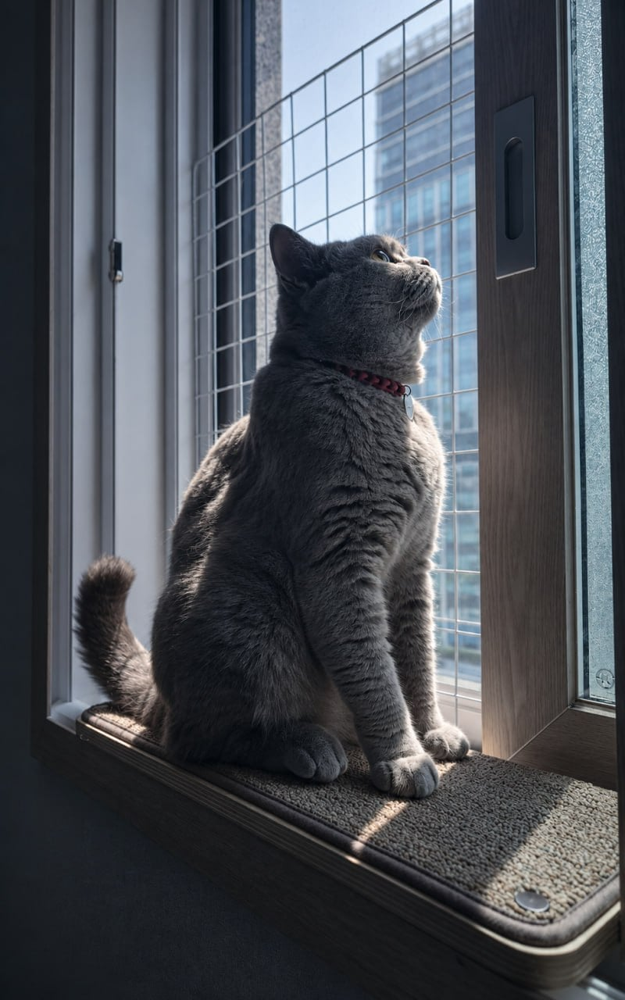
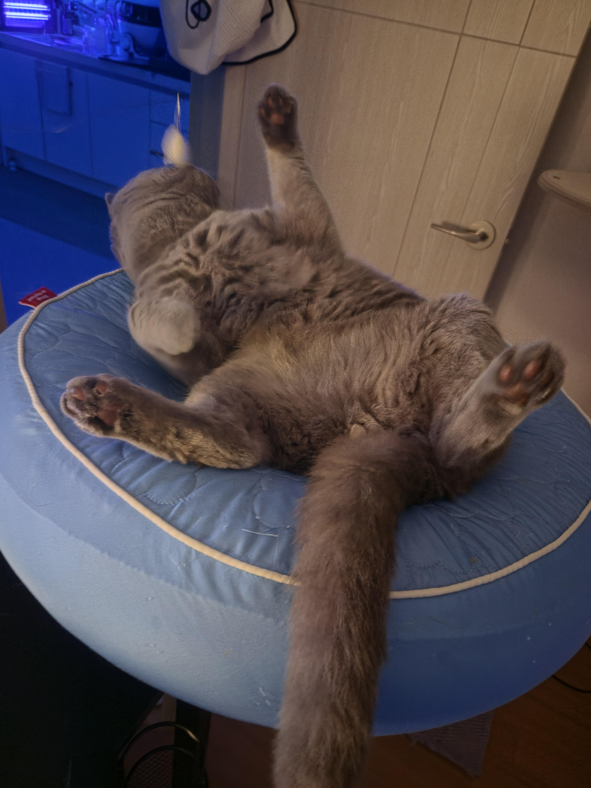
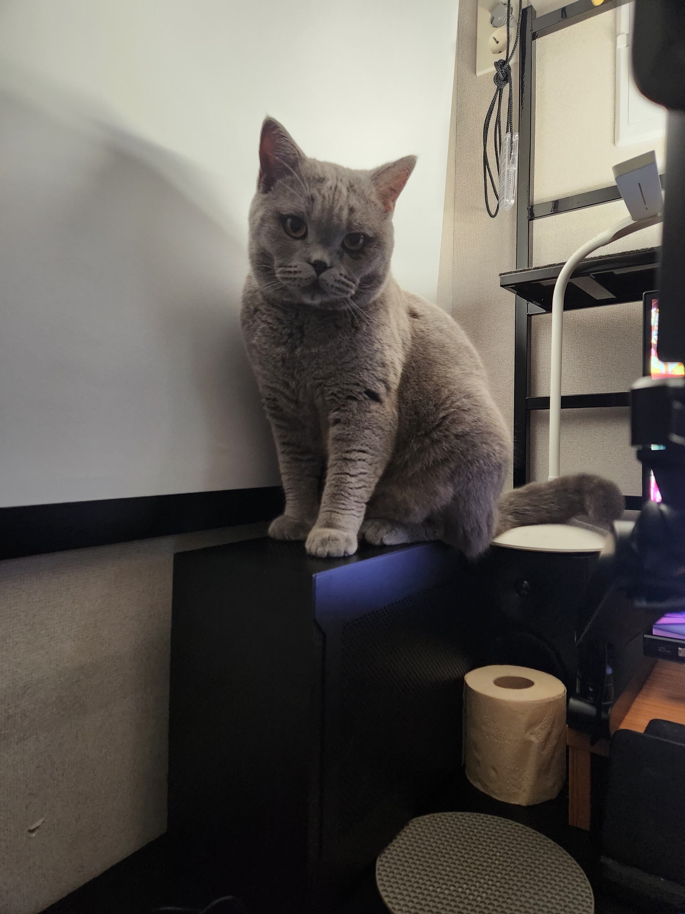
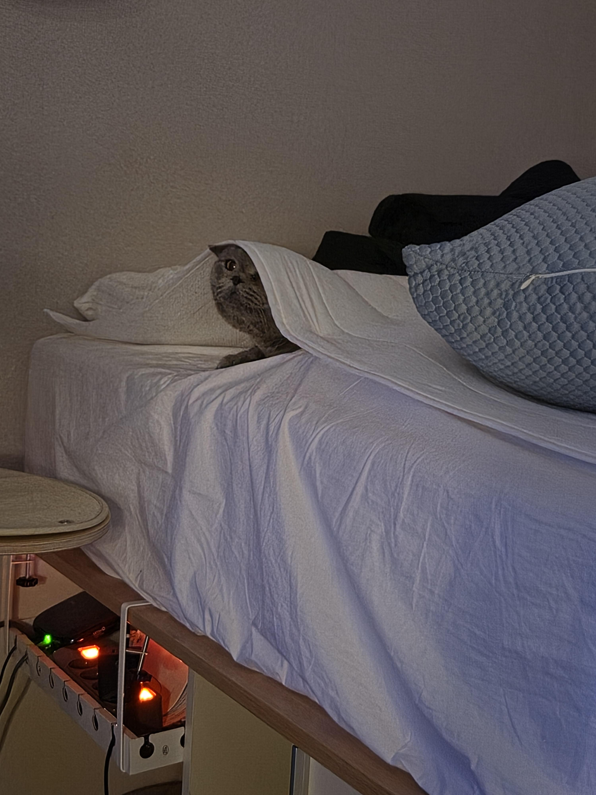
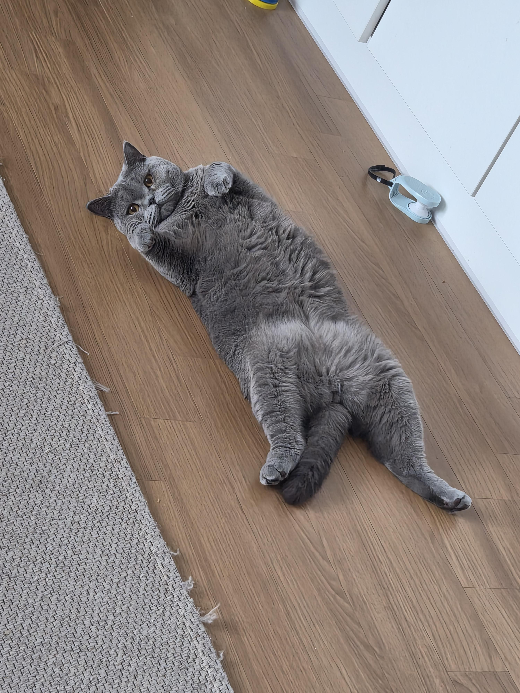
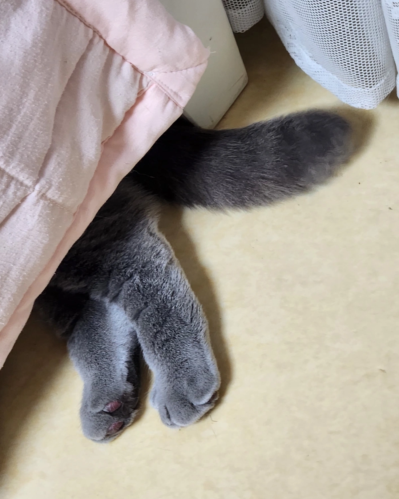
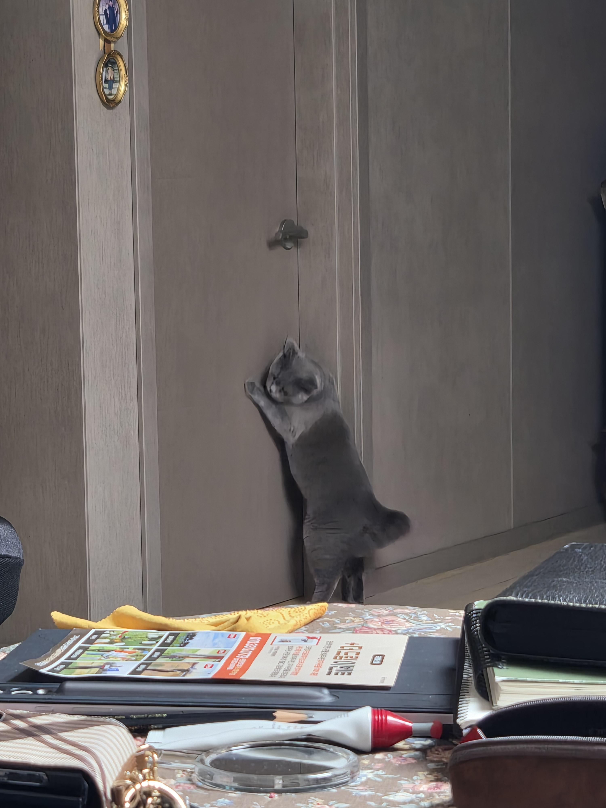
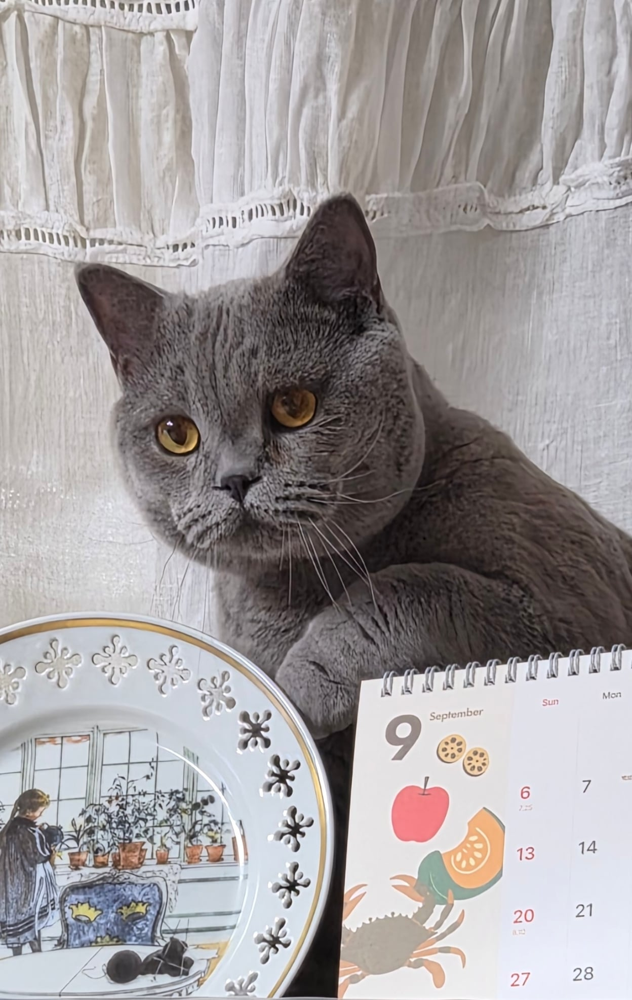

냥키파가 지켜줌..
밑에 사람있어요










떼껄룩!
냥키파가 지켜줌..
밑에 사람있어요










떼껄룩!
고놈 귀엽군
진짜 이쁘네
창문에 방묘 할거면 하나 더 사서 두개 겹쳐서 케이블 타이로 묶으면 돼
성격이 얌전해서 굳이 넘어갈 거 같진 않지만
맞아 굳이 넘어갈 성격이 아니라서 그냥 환기할때 샷시에 저거 하나만 끼워두고있어
위험하다 싶으면 하나 더 사서 해볼게
너가 더 잘 알겠지 ㅎㅎ
깨객 깨객 거리길래 냅뒀는데 신발장에 바퀴벌레잡아놨더랔ㅋ
고털도 많이 날리나?
귀엽네 오래오래 아프지 말고 잘 살아라
아 저 정도면 집사가 되어도 좋아
커엽다 더 내놔!!!
단점 지켜보기만함
하.. 우리집 귀여움 담당 고양이두마리는 나는놈들은 못잡던디.. 모기좀잡아줘 ㅅㅂ 바퀴는 개잘잡긴함..
고양이한테 저렇게 밟혀도 꿈쩍 안할 정도면 모기가 물든 말든 신경도 안쓰고 잘꺼 같은데 ㅋㅋㅋ